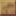

赭金砂的土黄层理块
参数
类型装饰方块
硬度1.25 / 抗爆 0.75
工艺切石机 1:1
详细教程
怎么获得
切石机里点「层叠赭金砂」，一份赭金砂换一块；反过来层叠块也能切回原石去粉碎。赭金砂在地下成层，颜色土黄，和绯红岩挨着出现时靠明度就能分清。
赭金砂在地下成层分布，挖矿时顺手带回来的原石足够切出整套形制，不必专门找矿。切回来的原石照样能粉碎出金，层叠块只是换了纹理，不损失材料价值。
怎么用
土黄横纹像夯土墙的年轮，做沙漠村落、矿镇土墙、梯田挡墙都很自然，不抢建筑主体的戏。做梯田挡墙时每层退进一格，横向纹路顺着坡走，墙就像一层层夯出来的。
想让层理更明显，把它夹在切制赭金砂中间，一粗一细两道线，墙面马上有分带。切制块做边、层叠块做心，一粗一细两道线，墙面立刻分出上下带。
常见坑
抗爆 0.75 是全石材最低值，和同族的赭金砂一样怕炸，仓库外墙别用它充数。仓库外墙至少换成抗爆 6.0 的石种，别拿土黄块凑数，一炸就是大洞。
它不能含水，水池内侧贴层叠块只会留下干区，想泡水还得换切制台阶。想在水边贴这种横纹，先把池沿换成含水台阶，再把层叠块砌到水线以上。